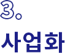

기술지도 / 마케팅 / 바우처
| 지원 사업명 |
요약 | 지원대상 | 수행기관 | 예비 창업 |
창업 후 3년 이내 기업 |
창업 후 3년 초과 5년 이내 기업 |
창업 후 5년 초과 7년 이내 기업 |
창업 후 7년 초과 기업 |
자료 출처 |
|---|---|---|---|---|---|---|---|---|---|
| 기술거래촉진네트워크사업 | 지역 내 중소기업의 기술 애로사항 해결을 위한 기술이전 및 사업화 지원 시스템 구축으로 글로벌 기술기업 육성 | 광주광역시 소재 중소기업 | 광주 테크노파크 |
ㅇ | ㅇ | ㅇ | ㅇ | 링크1 | |
| 이전기술 사업화 지원 | 국내외 대학, 연구기관, 기업 등이 개발한 기술을 이전받아 실용화·상품화를 위해 수행하는 이전기술사업화 지원 | 중소기업(산업단지내 입주 및 미니클러스터 활동기업) | 한국산업 단지공단 |
ㅇ | ㅇ | ㅇ | ㅇ | 링크1 | |
| 광주지역SW성장지원 전문가 매칭 컨설팅 | 광주지역 ICTㆍSW 기업의 비즈니스 애로사항의 전문가 자문을 제공하여 기업의 성장을 지원 | 광주지역 ICT‧SW기업 대표 및 임직원 등 | 광주정보 문화산업 진흥원 |
링크1 | |||||
| 광주 산업화디자인 프로젝트 |
광주지역 중소기업 및 디자인기업의 양산제품 디자인개발, 양산지원 및 마케팅 지원 | 지역 제조기업, 지역 디자인기업 | 광주 디자인센터 |
ㅇ | ㅇ | ㅇ | ㅇ | 링크1 | |
| 지역SW성장 지원사업 |
IT·SW 기업의 국내외시장 개척 및 수출과 수요창출을 위한 제반 환경을 조성하고 마케팅 활동 지원을 통한 기업 성장 지원 | 광주지역에 본사를 둔 ICT ・ SW관련 중소벤처기업 | 광주정보 문화산업 진흥원 |
ㅇ | ㅇ | ㅇ | ㅇ | 링크1 | |
| 광주지역기업 혁신성장 바우처지원사업 | 지역 내 주력산업 및 전·후방 연관 산업 분야 영위 중소기업의 경쟁력 향상을 위한 기술 및 사업화지원 | 광주지역 주력산업 또는 전·후방 연관 산업분야 기업 | 광주 테크노파크 |
ㅇ | ㅇ | ㅇ | ㅇ | 링크1 | |
| 기업맞춤형 수출성공패키지 지원 | 성장잠재력이 높은 내수․수출중소기업을 발굴, 개별기업 수요에 기반한 역량별 단계별 맞춤형 종합패키지 지원을 통해 해외수출 역량 강화 |
수출 2,000만불 이하 중소기업 / 7개사 | 광주전남 KOTRA 지원단 |
ㅇ | ㅇ | ㅇ | ㅇ | 링크1 |
서비스 개발/ 시제품제작/고도화/종합지원 기술사업화
| 지원 사업명 |
요약 | 지원대상 | 수행기관 | 예비 창업 |
창업 후 3년 이내 기업 |
창업 후 3년 초과 5년 이내 기업 |
창업 후 5년 초과 7년 이내 기업 |
창업 후 7년 초과 기업 |
자료 출처 |
|---|---|---|---|---|---|---|---|---|---|
| 지역SW서비스사업화지원사업 | 지역소재 강소SW기업을 대상으로 SW기반의 신규서비스 발굴 및 제품화를 위한 지역 SW서비스사업화지원 공모과제지원 | 지역소재 중소SW개발기업 주관하는 컨소시엄 | 광주정보 문화산업 진흥원 |
ㅇ | ㅇ | ㅇ | ㅇ | 링크1 | |
| 체험형융합콘텐츠제작지원사업 | 아시아 시장을 겨냥한 수익 창출형 융합콘텐츠 제작 생태계 구축을 통한 킬러 콘텐츠 발굴 및 글로벌 선도기업 육성 | VR·AR 등 어트랙션을 이용한 국내 및 아시아에 직접 활용 유통 할 수 있는 콘텐츠 개발 기업 |
광주정보 문화산업 진흥원 |
ㅇ | ㅇ | ㅇ | ㅇ | 링크1 | |
| 국가혁신 클러스터 지원사업 (비R&D) |
개방형 혁신(Open Innovation)을 통한 에너지신산업 혁신클러스터 생태계 조성 | 광주 국가혁신 클러스터 지역 내 에너지신산업 전후방 연관 기업 |
광주 테크노파크 |
ㅇ | ㅇ | ㅇ | ㅇ | 링크1 | |
| 에어가전 혁신지원센터 구축사업 |
광주 소재 에어가전 관련 기업 역량강화 및 시제품제작․사업화 지원 | 에어가전 관련 제품 보유 및 개발중인 기업 | 전자부품연구원 | ㅇ | ㅇ | ㅇ | ㅇ | 링크1 | |
| 시제품제작 지원 |
디자인 도안 및 연구개발 완료 후, 제품 제작도면 또는 Working Mock-up 을 보유하고 신제품을 제작하고자 하는 사업(양산금형 제외) | 중소기업(산업단지내 입주 및 미니클러스터 활동기업) | 한국산업 단지공단 |
ㅇ | ㅇ | ㅇ | ㅇ | 링크1 | |
| 광주광역시 Pre-명품강소기업 육성사업 | 기술혁신성을 바탕으로 고성장하는 지역 우수 중소기업을 명품강소기업 후보기업으로 발굴 및 육성하여 명품강소기업으로 육성 | 지역기업 중 선정기준 충족기업 | 광주 테크노파크 |
ㅇ | ㅇ | ㅇ | ㅇ | 링크1 | |
| 광주광역시 명품강소기업 육성사업 | 지역 내 유망 중소기업을 명품강소기업으로 발굴 및 육성하여 지역을 대표 하는 글로벌강소기업 및 WC300기업으로 육성 | 지역기업 중 선정기준 충족기업 | 광주 테크노파크 |
ㅇ | ㅇ | ㅇ | 링크1 | ||
| 광주스타기업 육성사업 | 지역 내 성장성 및 기술력이 우수기업을 발굴하여 광주를 대표하는 스타기업으로 육성하여 글로벌시장 진출기업으로 육성 | 지역기업 중 선정기준 충족기업 | 광주 테크노파크 |
ㅇ | ㅇ | ㅇ | 링크1 | ||
| 글로벌강소기업 육성사업 | 성장 잠재력과 혁신성을 겸비한 지역의 우수 중소·중견기업을 발굴, 지원하여 World Class 300 후보군으로 육성 | 지역 중소기업 중 선정기준 충족기업 | 광주 테크노파크 |
ㅇ | ㅇ | ㅇ | ㅇ | 링크1 |
인증
| 지원 사업명 |
요약 | 지원대상 | 수행기관 | 예비 창업 |
창업 후 3년 이내 기업 |
창업 후 3년 초과 5년 이내 기업 |
창업 후 5년 초과 7년 이내 기업 |
창업 후 7년 초과 기업 |
자료 출처 |
|---|---|---|---|---|---|---|---|---|---|
| 헬스케어로봇실증단지구축사업 | 헬스케어로봇 제품의 성능시험, 실증/인증지원, 표준화제정 등 전주기적 상용화 지원 | 지역 내외 헬스케어로봇 및 의료기기 관련 기업 | 광주 테크노파크 |
ㅇ | ㅇ | ㅇ | ㅇ | 링크1 | |
| 해외규격인증 획득 지원 | 관내 중소기업의 해외규격인증획득 소요 비용을 일부 지원하여 지역 수출 기업의 해외 판로 확대 | 전년도 수출실적 1,000만불 이하 중소기업 | 광주경제 고용진흥원 |
ㅇ | ㅇ | ㅇ | ㅇ | 링크1 | |
| 광주전북 Micro-Grid 산업생태계 기술지원 | 기술지원을 통한 광주전북지역 마이크로그리드 산업 생태계 조성 및 활성화 | 광주전북 Micro-Grid산업 연관 기업(전·후방 기업 포함) | 전자부품 연구원 |
ㅇ | ㅇ | ㅇ | ㅇ | 링크1 |